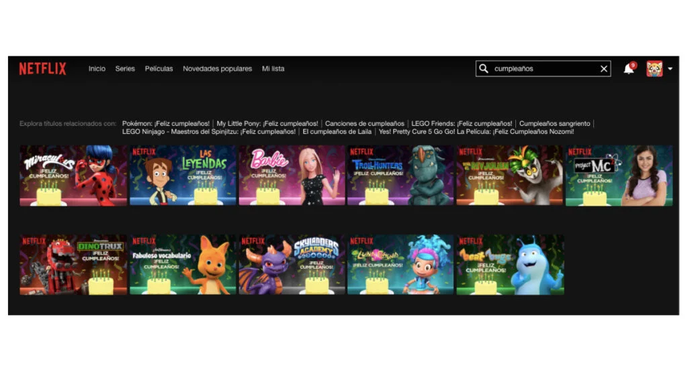

NotiJJ VIDEOJUEGOS
Netflix sigue, al día de hoy, como la plataforma de streaming más popular en el mundo, pese a la variedad de sitios on demand que existen. Desde su salida al mercado, hace poco más de 10 años, el también apodado «gigante del streaming» no deja de mantener cautivos a sus millones de suscriptores. Y lo hace no solo con su amplio catálogo de series, películas y documentales, sino también con una función que parecía oculta.
¿Y de qué manera puedes programarla? A continuación te compartimos los pasos que debes seguir.
Hecho por Jose Juan Garcia Anaya 8160852.